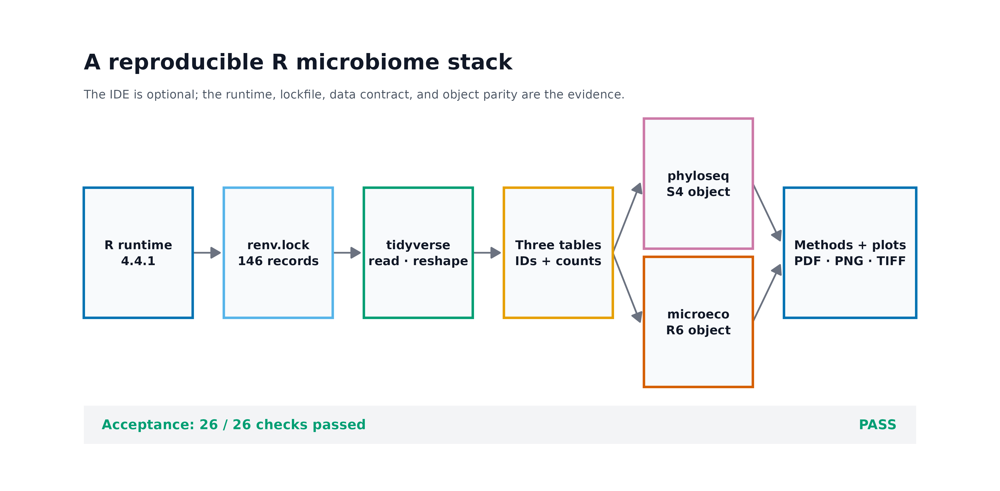
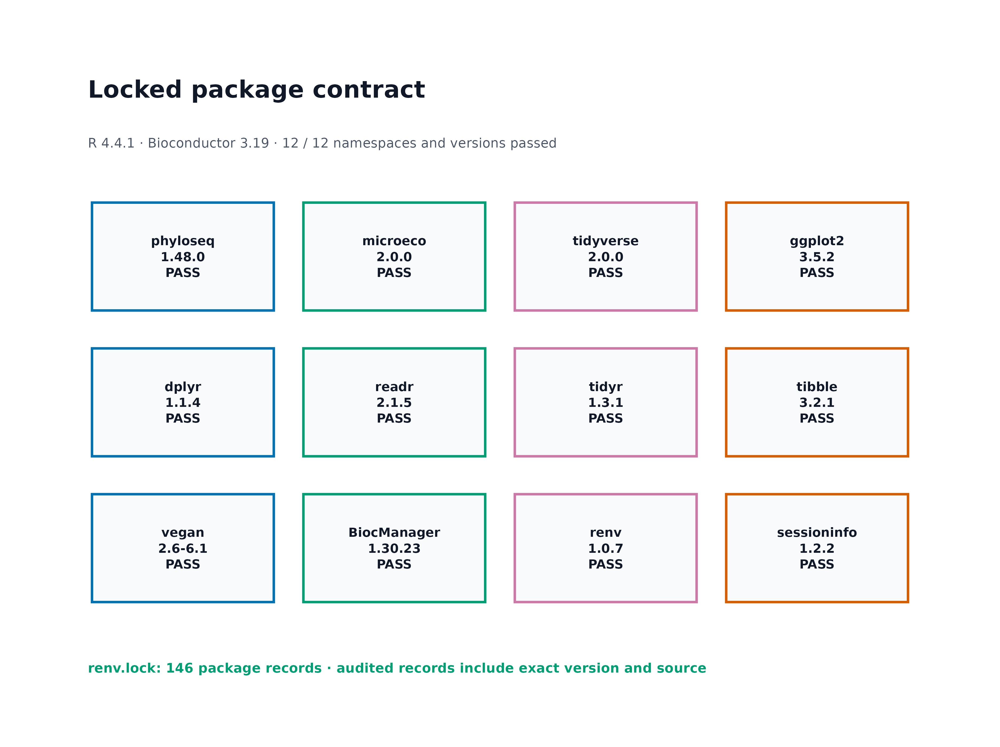
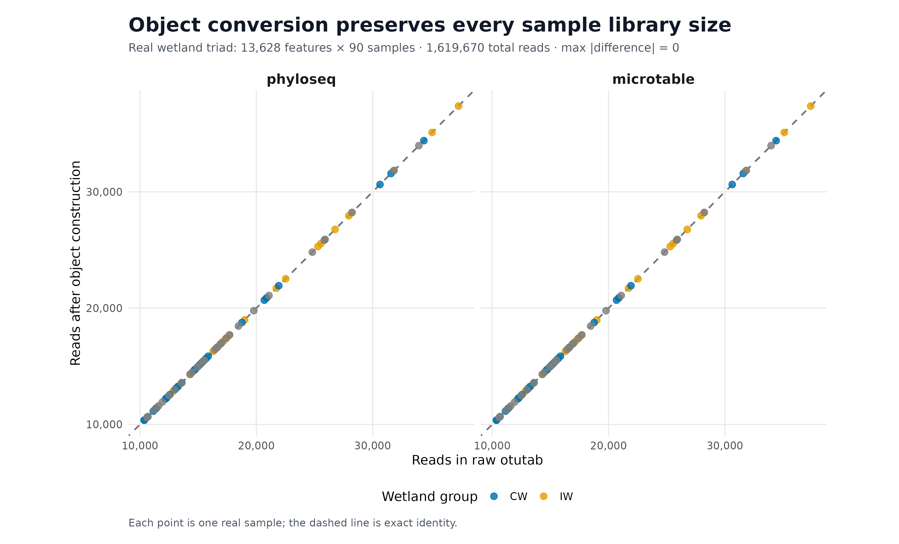

library(ggplot2)
library(dplyr)
library(readr)
library(tidyr)
library(tibble)
library(scales)
library(phyloseq)
library(microeco)
set.seed(20260719)
pal_pub <- c(
"#0072B2", "#D55E00", "#009E73", "#CC79A7",
"#E69F00", "#56B4E9", "#F0E442", "#999999"
)
scale_color_pub <- function(...) {
ggplot2::scale_color_manual(values = pal_pub, ...)
}
scale_fill_pub <- function(...) {
ggplot2::scale_fill_manual(values = pal_pub, ...)
}
theme_pub <- function(base_size = 12) {
ggplot2::theme_bw(base_size = base_size, base_family = "sans") +
ggplot2::theme(
panel.grid = ggplot2::element_blank(),
axis.text = ggplot2::element_text(color = "black"),
axis.ticks = ggplot2::element_line(
color = "black",
linewidth = 0.3
),
plot.title.position = "plot",
legend.key = ggplot2::element_blank(),
legend.background = ggplot2::element_rect(
fill = scales::alpha("white", 0.6),
color = NA
)
)
}
save_pub <- function(
plot,
file_base,
width = 180,
height = 115,
units = "mm",
dpi = 300,
write_tiff = TRUE
) {
dir.create(
dirname(file_base),
recursive = TRUE,
showWarnings = FALSE
)
ggplot2::ggsave(
paste0(file_base, ".pdf"),
plot,
width = width,
height = height,
units = units,
device = grDevices::cairo_pdf
)
ggplot2::ggsave(
paste0(file_base, ".png"),
plot,
width = width,
height = height,
units = units,
dpi = dpi,
bg = "white"
)
if (isTRUE(write_tiff)) {
ggplot2::ggsave(
paste0(file_base, ".tiff"),
plot,
width = width,
height = height,
units = units,
dpi = dpi,
compression = "lzw",
bg = "white"
)
}
invisible(plot)
}安装 R/RStudio + 关键包生态（phyloseq/microeco/tidyverse）
R 端分析需要哪些核心对象与包？
R 与 RStudio 的安装通常不进入论文主图，却决定后续每一张图能否在另一台机器上重现。最有用的证据不是 IDE 截图，而是三类可审计结果：
- R ecosystem map：运行时、锁文件、数据整理、对象模型与绘图各自负责什么；
- Package contract：R、Bioconductor 和关键包是否处在预期代际；
- Object parity audit：三件套转为不同对象后，feature、sample 与 reads 是否保持不变。



重要先记住一句话
RStudio 能打开，只说明编辑器能启动；library() 不报错，也只说明 namespace 能加载。可用于论文分析的环境还要证明版本被锁定、三件套方向正确、ID 对齐，并且对象转换没有改变数据。
本次实测环境为 R 4.4.1、Bioconductor 3.19、phyloseq 1.48.0、microeco 2.0.0、tidyverse 2.0.0 和 vegan 2.6-6.1。env/renv.lock 含 147 条包记录。真实湿地数据的验收结果为：
Input: 13,628 features × 90 samples
Taxonomy: 13,628 features × 7 ranks
Metadata: 90 samples × 3 variables
Total reads: 1,619,670
phyloseq: 13,628 features × 90 samples; 1,619,670 reads
microtable: 13,628 features × 90 samples; 1,619,670 reads
Sample-wise maximum absolute difference: 0
Required checks: 26 / 26 PASS开始前：数据与运行环境
在 Linux 或 WSL2 的项目文件夹中运行下面的下载命令。下载后保留这里的相对目录，后续命令使用同一组文件。
base_url="https://raw.githubusercontent.com/petemeng/microbiome-best-practices/3cb6a817e0c73ab7ecbec1cedc1ad80cbb9ecfaa"
for file in \
data/small/metadata.tsv \
data/small/otutab.tsv \
data/small/taxonomy.tsv \
env/renv.lock \
scripts/validate_r_ecosystem.R
do
mkdir -p "$(dirname "$file")"
curl --fail --location --retry 3 "$base_url/$file" --output "$file" || break
done安装顺序
建议按以下顺序安装：
R → RStudio（可选）→ 系统编译依赖 → CRAN/Bioconductor 包 → renv 锁定 → 真实数据验收Windows 和 macOS 可从 CRAN 下载 R，再从 Posit 下载 RStudio Desktop。Linux 可使用发行版包管理器或 CRAN 对应发行版仓库。安装后先在终端核对：
R --version
Rscript --versionRStudio 中再运行：
R.version.string
R.home()终端和 IDE 若显示不同 R 路径，先统一运行时，再安装包。
Ubuntu/WSL2 上，源码包常需要系统开发库。常用基线为：
#| eval: false
sudo apt update
sudo apt install -y \
r-base r-base-dev \
build-essential gfortran \
libcurl4-openssl-dev libssl-dev libxml2-dev \
libfontconfig1-dev libfreetype6-dev \
libharfbuzz-dev libfribidi-dev \
libpng-dev libtiff5-dev libjpeg-dev发行版仓库中的 R 版本不一定等于本次固定的 R 4.4.1。需要严格复现时，应安装对应 R 版本或使用预先验证的容器，而不是在不同 R 大版本下强行恢复旧 Bioconductor。
两种包安装路径
路径 A：恢复本次固定环境。
在含 env/renv.lock 的项目根目录运行：
#| eval: false
install.packages("renv", repos = "https://cloud.r-project.org")
stopifnot(
getRversion() >= "4.4.0",
getRversion() < "4.5.0"
)
renv::restore(
lockfile = "env/renv.lock",
prompt = FALSE
)恢复后核对 Bioconductor：
#| eval: false
BiocManager::version()
BiocManager::valid()路径 B：为新项目安装当前兼容环境。
#| eval: false
install.packages(
c(
"BiocManager", "microeco", "tidyverse", "vegan",
"renv", "sessioninfo", "digest"
),
repos = "https://cloud.r-project.org"
)
BiocManager::install(
"phyloseq",
ask = FALSE,
update = FALSE
)
renv::init()
renv::snapshot()路径 B 可能得到更新版本，不能直接套用本次固定版本的 QA 数字；应在自己的环境重新运行对象回验并记录实际版本。
内联作图函数
本次分析的数据、环境与图形设置
R 微生物组环境到底由哪些层组成
R 是运行时，RStudio 是 IDE
R 执行统计计算；RStudio 是 integrated development environment（集成开发环境，IDE），提供脚本编辑、项目导航、帮助、绘图窗格和调试工具。
两者关系类似：
R = engine
RStudio = cockpit安装 RStudio 不等于安装了合适版本的 R。反过来，没有 RStudio 也可以在终端执行：
Rscript --vanilla analysis.R--vanilla 会减少用户级启动文件、历史文件和已保存 workspace 对结果的隐性影响。自动化、服务器和论文复现应至少保留一条不依赖 IDE 点击操作的 Rscript 路径。
R、CRAN 与 Bioconductor 有不同的版本节奏
tidyverse、microeco、vegan、renv 等主要来自 CRAN；phyloseq 来自 Bioconductor。Bioconductor 每个 release 与特定 R 大版本配套，不能把任意 Bioconductor release 强行装进任意 R。
本次固定组合是：
| 层级 | 固定版本 | 说明 |
|---|---|---|
| R | 4.4.1 | 统计运行时 |
| Bioconductor | 3.19 | 与 R 4.4 配套的 release |
| phyloseq | 1.48.0 | Bioconductor 3.19 |
| microeco | 2.0.0 | 固定真实数据与接口版本 |
| tidyverse | 2.0.0 | 数据导入、整理与可视化语法集合 |
| vegan | 2.6-6.1 | 生态距离、排序与置换统计 |
这里使用历史固定组合是为了复现实测结果，不表示新项目永远应该停留在旧版本。新项目可以采用当前兼容的 R/Bioconductor 组合，但升级后必须重跑完整 QA，再生成新的锁文件。
“包生态”不是把所有包都 library() 一遍
不同包承担不同责任：
| 层级 | 包 | 主要责任 |
|---|---|---|
| 输入与整理 | readr、dplyr、tidyr、tibble |
读取、连接、长宽转换、变量管理 |
| 通用对象 | phyloseq |
S4 容器，统一 OTU、taxonomy、metadata 与 tree |
| 工作流对象 | microeco |
R6 容器和生态分析模块 |
| 生态统计 | vegan |
距离、排序、PERMANOVA、约束模型 |
| 作图 | ggplot2 |
图层语法与出版级导出 |
| 环境锁定 | renv |
记录包版本、来源与依赖 |
| 证据记录 | sessioninfo |
输出运行时、平台和包信息 |
调用函数时优先写包前缀：
dplyr::filter(...)
stats::filter(...)这比依赖 library() 的加载顺序更容易审计，也能避免 filter()、select() 等同名函数被错误解析。
phyloseq 与 microeco 是不同的对象模型
phyloseq 使用 S4 对象：
phyloseq(
otu_table(...),
tax_table(...),
sample_data(...)
)它适合显式 slot、严格 accessor 和大量生态包之间的对象交换。
microeco 使用 R6 对象：
microtable$new(
otu_table = ...,
tax_table = ...,
sample_table = ...
)R6 方法常直接修改对象自身。下面两行不一定产生两个互不影响的深拷贝：
dataset_b <- dataset_a
dataset_b$tidy_dataset()需要保留原对象时，应使用对应的 clone 机制：
dataset_b <- dataset_a$clone(deep = TRUE)三件套方向是对象构建的第一道门
本项目统一约定：
otutab: features × samples
taxonomy: features × taxonomic ranks
metadata: samples × variables因此：
phyloseq::otu_table(otu_matrix, taxa_are_rows = TRUE)如果你的 OTU 表是 samples × features，必须先转置，或把 taxa_are_rows 设为 FALSE。一个对象“成功创建”不自动证明方向正确；必须继续核对：
ntaxa(ps)
nsamples(ps)
sample_sums(ps)renv 锁的是 R 包，不是整个计算机
renv.lock 记录包版本、来源和依赖，可由 renv::restore() 恢复项目库。但它不会替你安装：
- 对应版本的 R；
- 系统级 C/C++/Fortran 编译器；
libxml2、libcurl、fontconfig、harfbuzz等系统开发库；- Quarto/Pandoc；
- 操作系统本身。
因此完整环境证据至少包括：
R version
Bioconductor release
renv.lock
system / container description
session information
real-data smoke test深入：为什么只记录 sessionInfo() 仍然不够
sessionInfo() 记录“这一次运行加载了什么”，适合追溯；但它不能自动在另一台机器上安装同一批包。renv.lock 可以描述如何恢复包，却不能证明恢复后的数据入口和对象转换仍然正确。
两者应分工：
| 证据 | 回答的问题 |
|---|---|
sessionInfo() / sessioninfo |
这一次究竟运行了什么 |
renv.lock |
如何恢复同一批 R 包 |
| 三件套 SHA-256 | 输入是否还是同一份 |
| 对象回验 | 转换是否保留 feature、sample 与 reads |
| Docker/系统记录 | 编译器和系统库是什么 |
这也是为什么本次验收同时保存版本审计、锁文件审计、输入哈希和对象同一性，而不是只贴一段 console 输出。
读取三张表并选择合适的R对象
确认 R、Rscript 与 Bioconductor 版本
在终端运行：
#| eval: false
Rscript --vanilla -e '
cat(R.version.string, "\n")
cat("Platform:", R.version$platform, "\n")
cat("Architecture:", .Machine$sizeof.pointer * 8, "bit\n")
cat("Libraries:\n")
writeLines(.libPaths())
'然后在 R 中确认 Bioconductor：
#| eval: false
cat("R:", as.character(getRversion()), "\n")
cat("Bioconductor:", as.character(BiocManager::version()), "\n")固定环境应得到：
R: 4.4.1
Bioconductor: 3.19
Architecture: 64 bit固定并校验真实数据来源
本次使用 microeco 2.0.0 源码包中随软件分发的真实 16S 湿地数据。下载固定归档：
#| eval: false
dir.create("downloads", showWarnings = FALSE)
dir.create("data/small", recursive = TRUE, showWarnings = FALSE)
microeco_url <- paste0(
"https://cran.r-project.org/src/contrib/Archive/",
"microeco/microeco_2.0.0.tar.gz"
)
microeco_tar <- "downloads/microeco_2.0.0.tar.gz"
download.file(
microeco_url,
microeco_tar,
mode = "wb"
)
observed_sha256 <- digest::digest(
file = microeco_tar,
algo = "sha256",
serialize = FALSE
)
stopifnot(
observed_sha256 ==
"454a3b71ceeea86bdd54f475a12b5bac9c3b124f663b8dc6e560827fca89ebfd"
)只解压三张数据表：
#| eval: false
extract_dir <- "downloads/microeco_2.0.0-source"
dir.create(extract_dir, recursive = TRUE, showWarnings = FALSE)
utils::untar(
microeco_tar,
files = c(
"microeco/data/otu_table_16S.RData",
"microeco/data/taxonomy_table_16S.RData",
"microeco/data/sample_info_16S.RData"
),
exdir = extract_dir
)
load(file.path(
extract_dir,
"microeco/data/otu_table_16S.RData"
))
load(file.path(
extract_dir,
"microeco/data/taxonomy_table_16S.RData"
))
load(file.path(
extract_dir,
"microeco/data/sample_info_16S.RData"
))将包内数据导出为通用三件套
#| eval: false
stopifnot(
identical(
rownames(otu_table_16S),
rownames(taxonomy_table_16S)
),
identical(
colnames(otu_table_16S),
rownames(sample_info_16S)
)
)
write.table(
otu_table_16S,
"data/small/otutab.tsv",
sep = "\t",
quote = FALSE,
col.names = NA
)
write.table(
taxonomy_table_16S,
"data/small/taxonomy.tsv",
sep = "\t",
quote = FALSE,
col.names = NA
)
write.table(
sample_info_16S,
"data/small/metadata.tsv",
sep = "\t",
quote = FALSE,
col.names = NA
)显示数据结构：
#| eval: false
dim(otu_table_16S)
dim(taxonomy_table_16S)
dim(sample_info_16S)
otu_table_16S[1:5, 1:5]
taxonomy_table_16S[1:5, ]
head(sample_info_16S)预期维度：
otutab: 13628 × 90
taxonomy: 13628 × 7
metadata: 90 × 3从文本三件套重新读入
不要直接沿用内存中的包对象；重新读取 TSV 才能检验交付接口。
#| eval: false
otutab <- read.delim(
"data/small/otutab.tsv",
row.names = 1,
check.names = FALSE
)
taxonomy <- read.delim(
"data/small/taxonomy.tsv",
row.names = 1,
check.names = FALSE
)
metadata <- read.delim(
"data/small/metadata.tsv",
row.names = 1,
check.names = FALSE
)
otu_matrix <- as.matrix(otutab)
storage.mode(otu_matrix) <- "numeric"
tax_matrix <- as.matrix(taxonomy)
storage.mode(tax_matrix) <- "character"check.names = FALSE 很重要：它避免 R 自动把样本名中的连字符等字符改写成点号。
构建对象前核对数据格式与 ID
#| eval: false
stopifnot(
nrow(otutab) == 13628,
ncol(otutab) == 90,
nrow(taxonomy) == nrow(otutab),
nrow(metadata) == ncol(otutab),
identical(rownames(otutab), rownames(taxonomy)),
identical(colnames(otutab), rownames(metadata)),
!anyDuplicated(rownames(otutab)),
!anyDuplicated(colnames(otutab)),
!anyDuplicated(rownames(metadata)),
all(is.finite(otu_matrix)),
all(otu_matrix >= 0),
all(otu_matrix == round(otu_matrix))
)
raw_library <- colSums(otu_matrix)
stopifnot(sum(raw_library) == 1619670)构建 phyloseq 对象
#| eval: false
ps <- phyloseq::phyloseq(
phyloseq::otu_table(
otu_matrix,
taxa_are_rows = TRUE
),
phyloseq::tax_table(tax_matrix),
phyloseq::sample_data(metadata)
)
ps
phyloseq::ntaxa(ps)
phyloseq::nsamples(ps)
summary(phyloseq::sample_sums(ps))关键回验：
#| eval: false
stopifnot(
phyloseq::ntaxa(ps) == nrow(otu_matrix),
phyloseq::nsamples(ps) == ncol(otu_matrix),
sum(phyloseq::sample_sums(ps)) == sum(otu_matrix),
identical(
sort(phyloseq::taxa_names(ps)),
sort(rownames(otu_matrix))
),
identical(
sort(phyloseq::sample_names(ps)),
sort(colnames(otu_matrix))
)
)构建 microeco 对象
#| eval: false
mt <- microeco::microtable$new(
sample_table = metadata,
otu_table = as.data.frame(
otu_matrix,
check.names = FALSE
),
tax_table = taxonomy,
auto_tidy = TRUE
)
mt关键回验：
#| eval: false
stopifnot(
nrow(mt$otu_table) == nrow(otu_matrix),
ncol(mt$otu_table) == ncol(otu_matrix),
nrow(mt$tax_table) == nrow(taxonomy),
nrow(mt$sample_table) == nrow(metadata),
identical(
rownames(mt$otu_table),
rownames(mt$tax_table)
),
identical(
colnames(mt$otu_table),
rownames(mt$sample_table)
),
sum(as.matrix(mt$otu_table)) == sum(otu_matrix)
)用 tidyverse 连接逐样本核对
#| eval: false
phyloseq_library <- phyloseq::sample_sums(ps)
microtable_library <- colSums(
as.matrix(mt$otu_table)
)
library_audit <- tibble::tibble(
sample_id = names(raw_library),
raw_reads = as.numeric(raw_library)
) |>
dplyr::left_join(
tibble::tibble(
sample_id = names(phyloseq_library),
phyloseq_reads = as.numeric(phyloseq_library)
),
by = "sample_id"
) |>
dplyr::left_join(
tibble::tibble(
sample_id = names(microtable_library),
microtable_reads = as.numeric(microtable_library)
),
by = "sample_id"
) |>
dplyr::mutate(
phyloseq_delta = phyloseq_reads - raw_reads,
microtable_delta = microtable_reads - raw_reads
)
stopifnot(
nrow(library_audit) == 90,
all(stats::complete.cases(library_audit)),
max(abs(library_audit$phyloseq_delta)) == 0,
max(abs(library_audit$microtable_delta)) == 0
)
head(library_audit)输出可引用的环境信息
#| eval: false
dir.create(
"results/09-r-ecosystem",
recursive = TRUE,
showWarnings = FALSE
)
write.table(
library_audit,
"results/09-r-ecosystem/sample-library-audit.tsv",
sep = "\t",
quote = FALSE,
row.names = FALSE
)
capture.output(
sessioninfo::session_info(),
file = "results/09-r-ecosystem/r-session-info.txt"
)
cat(
"Bioconductor:",
as.character(BiocManager::version()),
"\n",
file = "results/09-r-ecosystem/r-session-info.txt",
append = TRUE
)一次性环境审计入口为：
#| eval: false
Rscript --vanilla scripts/validate_r_ecosystem.R \
--project-root . \
--output-dir results/09-r-ecosystem \
--figure-dir figures执行成功时，environment-summary.json 中应出现：
{
"status": "passed",
"r_version": "4.4.1",
"bioconductor_version": "3.19",
"lock_package_records": 147,
"package_checks_passed": 12,
"checks_total": 26,
"checks_passed": 26,
"checks_failed": 0,
"object_parity_checks_passed": 6
}检查对象转换和分析结果是否一致
用同一性图证明对象转换没有改数据
把两个对象的逐样本 library size 整成长表：
#| eval: false
plot_data <- dplyr::bind_rows(
library_audit |>
dplyr::transmute(
sample_id,
raw_reads,
object_reads = phyloseq_reads,
object = "phyloseq"
),
library_audit |>
dplyr::transmute(
sample_id,
raw_reads,
object_reads = microtable_reads,
object = "microtable"
)
) |>
dplyr::left_join(
tibble::rownames_to_column(
metadata,
var = "sample_id"
),
by = "sample_id"
)图内分组名称保持英文：
#| eval: false
plot_data$Group <- dplyr::recode(
plot_data$Group,
CW = "CW",
IW = "IW"
)绘制 identity audit：
#| eval: false
p_parity <- ggplot2::ggplot(
plot_data,
ggplot2::aes(
x = raw_reads,
y = object_reads,
color = Group
)
) +
ggplot2::geom_abline(
slope = 1,
intercept = 0,
color = "#6B7280",
linetype = "dashed",
linewidth = 0.7
) +
ggplot2::geom_point(
size = 2.4,
alpha = 0.82
) +
ggplot2::facet_wrap(
~object,
nrow = 1
) +
scale_color_pub(name = "Wetland group") +
ggplot2::scale_x_continuous(
labels = scales::label_comma()
) +
ggplot2::scale_y_continuous(
labels = scales::label_comma()
) +
ggplot2::coord_equal() +
ggplot2::labs(
title = "Object conversion preserves every sample library size",
subtitle = paste0(
"13,628 features × 90 samples · ",
"1,619,670 total reads · max |difference| = 0"
),
x = "Reads in raw otutab",
y = "Reads after object construction"
) +
theme_pub()
save_pub(
p_parity,
"figures/09-object-parity-audit",
width = 190,
height = 120,
dpi = 350
)检查软件版本、输入文件与对象是否匹配
适合放进补充材料的稳定信息包括：
- R 与 Bioconductor 代际；
- 被分析脚本实际调用的包版本；
renv.lock哈希；- 输入表 SHA-256；
- 对象转换后维度与 reads；
- 验收日期和命令。
不适合作为核心合同的内容包括：
- RStudio 窗口布局；
- console 历史；
- 临时目录；
- 本机用户名和绝对路径；
- 某次下载缓存位置。
图形导出
网页展示 PNG，投稿与后续编辑保留 PDF；期刊要求位图时提供 300 dpi 以上 LZW TIFF。导出后检查：
#| eval: false
file.info(
c(
"figures/09-object-parity-audit.pdf",
"figures/09-object-parity-audit.png",
"figures/09-object-parity-audit.tiff"
)
)[, c("size", "mtime")]常见坑
注意坑 1：把 RStudio 当成 R
RStudio 需要连接一个已安装的 R。若终端 Rscript --version 失败，先安装或修复 R；反复重装 IDE 不会补齐统计运行时。
注意坑 2：IDE 与终端指向不同 R
RStudio 中的 R.home()、终端中的 R RHOME 和 which Rscript 应指向预期安装。不同路径会导致“IDE 能加载、服务器脚本不能加载”的假象。
注意坑 3：用 install.packages() 安装 phyloseq
phyloseq 属于 Bioconductor，应使用 BiocManager::install("phyloseq")。同时核对 R 与 Bioconductor release 的兼容关系。
注意坑 4：在旧 R 中强行安装新 Bioconductor
不要把“package is not available”立即解释为网络问题。先运行 BiocManager::version() 和 BiocManager::valid()，确认 release 代际。
注意坑 5：用户库不可写
若报 library is not writable，建立属于当前用户的项目库或用户库，不要习惯性用管理员权限启动 R。项目级 renv 通常比污染系统库更安全。
注意坑 6：缺少编译器或系统开发库
Linux 源码包可能需要 GCC、gfortran、curl/XML/SSL/font 系统头文件；Windows 安装源码包时可能需要对应 R 版本的 Rtools。先读安装日志中第一条真实编译错误。
注意坑 7：全局 update.packages() 后直接覆盖锁文件
升级应在单独分支或新环境完成，先全流程验收，再 renv::snapshot()。锁文件改变但结果未复核，不应进入发布版本。
注意坑 8：OTU 表方向反了
对象能创建不代表方向正确。构建后必须把 ntaxa()、nsamples() 与原始表的 feature/sample 数逐项对照。
注意坑 9：R 自动改写样本名
read.delim() 默认可能把列名改成合法 R 名称。读取三件套时使用 check.names = FALSE，并在对象构建前执行 identical(colnames(otutab), rownames(metadata))。
注意坑 10：只比较总 reads
两个对象总 reads 相同，仍可能发生样本错位。至少比较逐样本 library size；涉及 taxonomy 时还要比较 feature ID 与顺序。
注意坑 11：忽略 R6 引用语义
b <- a 可能让两个变量引用同一 R6 对象。需要独立分支时使用 a$clone(deep = TRUE)，并在过滤前后保存 feature/sample 审计。
注意坑 12：函数同名被遮蔽
filter()、select()、lag() 等函数可能来自多个包。论文分析脚本优先使用 dplyr::filter() 这样的显式命名空间。
注意坑 13：一开始就把 13,628 × 90 表转成长表
长表会把 1,226,520 个 count 单元展开为行，显著增加内存。多数 library-size、过滤和距离计算应先在矩阵或稀疏结构上完成。
注意坑 14：只保存 ps.rds，不保留三件套
RDS 适合加速项目内部工作，但会绑定对象类和包版本。正式交付仍应保留可读的 otutab、taxonomy、metadata 与 checksum。
报告R环境与数据对象
英文模板
All analyses were performed in R 4.4.1 under Bioconductor 3.19.
Package dependencies were recorded in an renv lockfile. The principal
packages were phyloseq 1.48.0, microeco 2.0.0, tidyverse 2.0.0,
vegan 2.6-6.1, and ggplot2 3.5.2. The input consisted of a
feature-by-sample count table, a feature-by-rank taxonomy table, and a
sample-by-variable metadata table. Feature and sample identifiers were
required to match exactly before object construction. The same input
was assembled independently as a phyloseq object and a microeco
microtable object. Feature counts, sample counts, total reads, and
sample-wise library sizes were verified to be identical to the source
tables. Scripts were executed with Rscript in a clean session, and
session information and input SHA-256 values were retained.需要替换的内容
- R 与 Bioconductor 版本；
- 实际使用的包和版本；
- count/taxonomy/metadata 表方向；
- 是否包含 phylogenetic tree；
- 是否真正使用了 phyloseq、microeco，或两者；
- 锁文件、容器或系统环境的获取位置；
- 输入 checksum 和对象回验指标。
警告不要写进 Methods 的内容
没有实际使用 RStudio 的交互功能时，不必把 RStudio 版本当成分析方法；没有执行对象同一性检查时，也不要写“data integrity was verified”。
将R环境与数据对象用于自己的研究
只改路径和分组列
#| eval: false
otu_path <- "data/my_project/otutab.tsv"
tax_path <- "data/my_project/taxonomy.tsv"
meta_path <- "data/my_project/metadata.tsv"
group_col <- "Treatment"
otutab <- read.delim(
otu_path,
row.names = 1,
check.names = FALSE
)
taxonomy <- read.delim(
tax_path,
row.names = 1,
check.names = FALSE
)
metadata <- read.delim(
meta_path,
row.names = 1,
check.names = FALSE
)自动判断是否需要转置
#| eval: false
feature_match_rows <- sum(
rownames(otutab) %in% rownames(taxonomy)
)
feature_match_columns <- sum(
colnames(otutab) %in% rownames(taxonomy)
)
if (
feature_match_columns > feature_match_rows
) {
otutab <- as.data.frame(
t(as.matrix(otutab)),
check.names = FALSE
)
}转置后仍要执行严格合同：
#| eval: false
stopifnot(
identical(rownames(otutab), rownames(taxonomy)),
identical(colnames(otutab), rownames(metadata)),
group_col %in% colnames(metadata)
)taxonomy 只有一列分号字符串
如果 taxonomy 形如：
k__Bacteria;p__Proteobacteria;c__Gammaproteobacteria;...可拆成七列：
#| eval: false
taxonomy <- taxonomy |>
tibble::rownames_to_column("FeatureID") |>
tidyr::separate_wider_delim(
cols = 2,
delim = ";",
names = c(
"Kingdom", "Phylum", "Class", "Order",
"Family", "Genus", "Species"
),
too_few = "align_start",
too_many = "merge"
) |>
tibble::column_to_rownames("FeatureID")再清理前缀：
#| eval: false
taxonomy[] <- lapply(
taxonomy,
function(x) sub("^[a-z]__", "", trimws(x))
)metadata 中含中文分组
作图前映射为英文：
#| eval: false
metadata$Treatment <- dplyr::recode(
metadata$Treatment,
"对照" = "Control",
"处理" = "Treatment"
)构建两种对象并回验
#| eval: false
otu_matrix <- as.matrix(otutab)
storage.mode(otu_matrix) <- "numeric"
ps <- phyloseq::phyloseq(
phyloseq::otu_table(
otu_matrix,
taxa_are_rows = TRUE
),
phyloseq::tax_table(
as.matrix(taxonomy)
),
phyloseq::sample_data(metadata)
)
mt <- microeco::microtable$new(
sample_table = metadata,
otu_table = as.data.frame(
otu_matrix,
check.names = FALSE
),
tax_table = taxonomy,
auto_tidy = TRUE
)
stopifnot(
phyloseq::ntaxa(ps) == nrow(otu_matrix),
phyloseq::nsamples(ps) == ncol(otu_matrix),
sum(phyloseq::sample_sums(ps)) == sum(otu_matrix),
nrow(mt$otu_table) == nrow(otu_matrix),
ncol(mt$otu_table) == ncol(otu_matrix),
sum(as.matrix(mt$otu_table)) == sum(otu_matrix),
identical(
unname(phyloseq::sample_sums(ps)[colnames(otu_matrix)]),
unname(colSums(otu_matrix))
),
identical(
unname(colSums(mt$otu_table)[colnames(otu_matrix)]),
unname(colSums(otu_matrix))
)
)
提示树不是本章必需输入
基础对象可以只包含 counts、taxonomy 和 metadata。Faith’s PD、UniFrac 等系统发育指标才需要额外的 feature tree；加入树时还要核对 tip labels 与 feature IDs。
参考
- R Core Team. R Installation and Administration. CRAN official manual.
- Posit. RStudio IDE User Guide. Official documentation.
- Bioconductor. Bioconductor 3.19 Released. 2024. Release announcement.
- Bioconductor. Install Bioconductor. Official installation guide.
- McMurdie PJ, Holmes S. phyloseq: an R package for reproducible interactive analysis and graphics of microbiome census data. PLOS ONE. 2013;8(4):e61217. doi:10.1371/journal.pone.0061217.
- Liu C, Cui Y, Li X, Yao M. microeco: an R package for data mining in microbial community ecology. FEMS Microbiology Ecology. 2021;97(2):fiaa255. doi:10.1093/femsec/fiaa255.
- Wickham H, Averick M, Bryan J, et al. Welcome to the tidyverse. Journal of Open Source Software. 2019;4(43):1686. doi:10.21105/joss.01686.
- Ushey K, Wickham H. Project Environments with renv. Official documentation.
- CRAN. microeco source archive. microeco 2.0.0.
- An J, Liu C, Wang Q, et al. Soil bacterial community structure in Chinese wetlands. Geoderma. 2019;337:290–299. doi:10.1016/j.geoderma.2018.09.035.